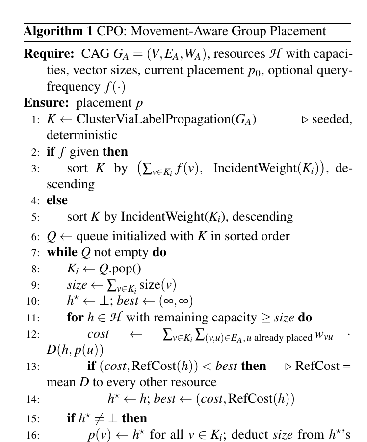
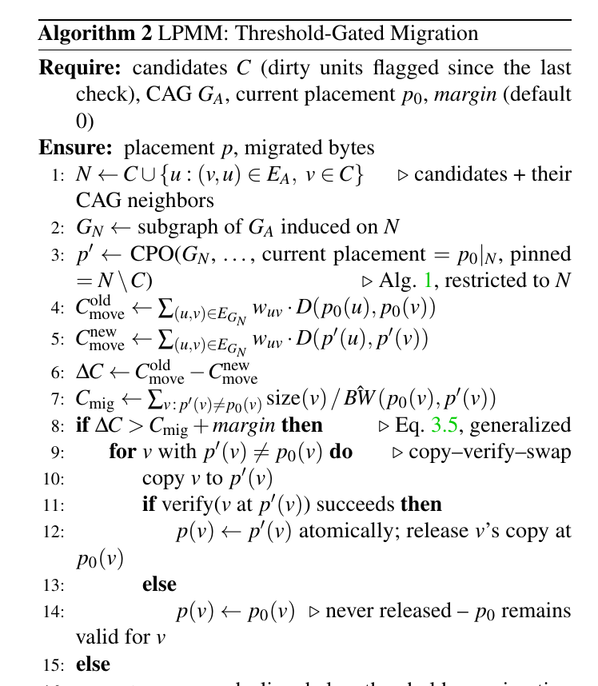

SHARE
A multimodal query often searches text vectors first and then fetches the matching image vectors. Each ANN search is fast on its own, but the two results may live one in GPU memory and the other in remote object storage, and what is really slow is the movement needed to bring them together. CoLoc changes neither the embeddings nor the ANN indexes; it only adjusts which storage tier each vector lives on, so vectors that the same query tends to use together end up on the same tier. On a four-tier testbed of GPU, memory, local NVMe and Amazon S3, the share of queries that need data from more than one tier drops from 73.04% to 0, end-to-end latency falls 6.8%, and by 24.8% when half the queries are multimodal, while Recall@10 does not change at all.
Engineers working on multimodal retrieval, vector databases or feature stores may want to read it, because it isolates a cost that is often overlooked: index optimization decides where you search; this decides where the data one query needs comes together. The core idea in one sentence: count which vectors are read together, pack them onto the same tier, move only what is worth moving when access patterns change, and hide the unavoidable slow-tier reads with prefetching. This is, however, a short single-author paper with a Python prototype and only 50,000 objects, so the conclusions read more like a direction check than production-grade evidence.
What problem is it actually solving?
Take a medical retrieval example (illustrative). Each case has two representations, a report-text vector and a chest X-ray image vector, each with its own ANN index. A doctor types a description; the system finds similar cases in the text index and then fetches those cases' X-ray vectors for comparison.
| Case (illustrative) | Text vector on | X-ray vector on | Movement this query needs |
|---|---|---|---|
| A | GPU memory | GPU memory | None |
| B | Memory | Local NVMe | One cross-tier read |
| C | Memory | Amazon S3 | One remote read, about 24 ms |
The two indexes decide placement independently. The text index keeps case C's text in memory based on its own access heat, while the image index may push its X-ray vector to S3 because image vectors are colder overall. Each index's layout is reasonable on its own; inside one query, they add a remote round trip. The paper measures the S3 round trip at 24.2 ms, one to two orders of magnitude slower than the other tiers, so a single such read decides the query's latency.
The author calls this cross-modal co-locality: representations that one query uses together should be physically close. Semantic similarity alone is not enough, because two semantically close vectors are not necessarily read together; access records alone are not enough either, because new access patterns have too few records.
The pipeline
CoLoc is a storage-management layer on top of existing vector indexes. Everything runs in the background, off the query path.
| Component | What it does | Output |
|---|---|---|
| Cross-modal access graph | Records which vectors are read together by the same query | A weighted graph; heavier edges should be co-located |
| Placement optimizer | Splits the graph into groups and places each group on one tier | The tier for each vector |
| Migration manager | After access patterns change, decides which moves pay off | A small number of migrations |
| Prefetcher | When a query reads A, pulls A's neighbors from slow tiers into a cache | Hides the remaining slow-tier latency |
The key division of labor: the graph answers who belongs with whom, the optimizer answers which tier, and the migration manager answers whether a move is worth it now. Let's take them apart.
The access graph: why mix three signals?
Each node is a storage unit that can be moved independently, and an edge weight is the sum of three parts:
is how often the two are read by the same query (normalized), is the semantic similarity of the two embeddings, and looks at the gap between their last access times: if both were read at about the same moment it is high, and if their last accesses are far apart it is low. The three coefficients are tunable and all set to 1 in the experiments. Co-access is the main evidence; semantic similarity handles cold start, giving new vectors an initial weight before they have access records; temporal proximity captures short-lived correlations, such as a batch of cases being pulled up repeatedly this week.
A worked example (all values illustrative): case C's text and X-ray have been read together many times, so normalized ; their semantic similarity is ; their last accesses were close, . The weight is . Another pair is semantically very close () but has never been read together and was not accessed recently, so its weight is only 0.9. The optimizer places the first pair together first.
The graph is maintained incrementally: a new access recomputes only the edges touching that object. Semantic similarity never changes and is cached once. But co-access counts are normalized by a global statistic, and when that statistic changes every edge has to be recomputed. So incremental maintenance saves time only under frequent small changes; one large shift in access patterns still triggers a full rebuild. The author states this clearly and measures the regimes separately.
Placement: put a whole group on one tier

Graph partitioning under capacity constraints is NP-hard, so the optimizer is greedy. It first clusters the graph with label propagation: each node starts with its own label and repeatedly adopts the label with the heaviest edge weight among its neighbors; after a few rounds a tightly connected set of nodes converges to one label and becomes a group. Groups are then queued by heat: if per-vector query frequency is known, groups are ordered by total query volume, so high-traffic groups take the fast tiers first and the data pushed to slow tiers is the coldest.
Which tier a group goes to depends on the movement cost between it and its already-placed neighbors if it sits on that tier. Movement cost between tiers is a table where each cell is roughly how many seconds it takes to get data from one tier to another, combining latency, bandwidth and a few other factors. The first group has no placed neighbors, so this cost is 0 on every tier; it then goes to the tier with the lowest average cost to all other tiers, usually a fast one, which is why high-traffic groups at the front of the queue claim fast tiers. The same access graph therefore yields different placements on different hardware topologies, for example telling apart, under NUMA (non-uniform memory access), reading memory on the same socket versus another socket. If a whole group does not fit, the optimizer peels off the node with the most edges in the access graph, makes the remaining nodes a smaller group, and puts both back in the queue.
This step only moves storage units. It does not change ANN graph edges, vector codes or index structures, so every index keeps its own optimizations.
Migration: move only what pays off

Access patterns change over time; static placement grows stale, while periodic global reorganization may move more than it saves. The migration manager's rule is direct:
is the movement time each query saves after the move. is how many future queries are expected to use the unit, estimated from its past access rate (illustrative: queried 100 times in the past hour means about 100 more in the next hour). is the time the migration itself takes, data size divided by the bandwidth between the two tiers. It moves only when the left side is larger.
A worked example (illustrative): a 50 MB group moves from S3 to memory; at the paper's measured S3 bandwidth of 86.4 MB/s, one move takes about 0.58 seconds. If each query then saves 20 ms, the move pays off as soon as more than 29 future queries will use the group. A cold group expected to be queried only a few times stays where it is.
Migration follows copy, verify, switch: data is copied to the target tier and verified, the location table is updated atomically, and only then is the old copy released. If anything fails midway, the old location remains valid and no data is lost.
Prefetching: hide the unavoidable slow-tier reads
With limited capacity, some data can only live on the slowest tier. The prefetcher handles this: when a query reads u, it pulls u's neighbors in the access graph from slow tiers into a bounded cache ahead of time.
Raw co-access counts are not enough, because "read together 2 times out of 2" and "200 out of 200" carry very different confidence. The prefetcher smooths them with a Beta prior: with few samples the estimate stays near the prior, and only with many samples does it approach the observed rate. It prefetches only when the estimated conditional probability clears a threshold and the neighbor is actually on a slow tier and not already cached. When there are not enough worker threads, candidates are served highest-confidence first rather than first-come first-served.
Results
The experiments build four tiers on Amazon's cloud: a GPU machine, a large-memory machine, a machine with NVMe disks, and Amazon S3. Each tier's capacity is set as a fraction of the dataset, with the GPU holding only 15%, so every strategy must use several tiers. The data is 50,000 objects from the public MIMIC-CXR chest X-ray dataset, each with one report vector and one image vector. The baseline places the two indexes independently.
| Configuration | Cross-tier access rate | End-to-end latency | Utilization of the fullest tier | Recall@10 |
|---|---|---|---|---|
| Independent placement | 73.04% | 12.52 ms | 166.7% (over capacity) | 1.0000 |
| Co-access only | not reported | 20.67 ms | not reported | 1.0000 |
| Access graph + placement optimizer | 0.00% | 11.67 ms | 100% | 1.0000 |
| Full system + prefetch | not reported | 10.75 ms | not reported | 1.0000 |
Cross-tier access rate is the share of multimodal queries that need to assemble data from different tiers; a utilization above 100% means that tier holds more data than its capacity. It drops to 0 because the text and image read together land on the same tier, so fetching them needs no movement between tiers. Meanwhile slightly more data sits on the remote tier (38.8% vs 34.9%), which shows the gain does not come from moving more data to fast tiers but from keeping data that is read together in one place. The co-access-only variant is actually slower, which suggests placement from access records alone can be worse and the semantic and temporal signals do matter.
The more multimodal queries, the bigger the gain: latency falls 8.3% when 10% of queries are multimodal and 24.8% when half are. This shows co-location only helps queries that fetch across modalities; systems dominated by single-modality queries gain little.
For migration, the author switches the access pattern once midway and compares three options: no moves, periodic global reorganization, and the migration manager. The migration manager moved only 5.10 MB in 14.03 seconds, versus 30.19 MB and 54.65 seconds for global reorganization, with nearly the same cross-tier access rate (0.11% vs 0) and the lowest post-shift latency. This shows that moving only what changed captures most of the benefit of a global reorganization. Incremental graph maintenance triggered only 1 full rebuild across 19 small update batches, cutting build time from 5.235 to 0.756 seconds.
Limitations as I see them
First, the scale is tiny. 50,000 objects, one machine per tier, 100,000 vectors; the whole dataset is a few hundred MB, and the largest migration is 30 MB. Production vector stores hold hundreds of millions of entries, and the storage cost of the access graph and the cost of label propagation cannot be seen in this experiment.
Second, the absolute latency gain is small. The baseline is 12.52 ms and the optimized version 11.67 ms, with ANN search itself taking 8.72 ms. In a real multimodal retrieval pipeline there is usually reranking and generation afterwards, and a few milliseconds may disappear in the noise.
Third, the baseline is weak. The main comparison is fully independent placement; there is no comparison with the most naive option of storing all modalities of an object together. In this experiment each object has exactly one text and one image, so packing by object would likely capture most of the gain.
How a recommendation or search team could try this
- Measure the current state first: in multimodal retrieval or multi-source feature fetching logs, check how many storage tiers one request's data spans and how much of end-to-end latency cross-tier reads take. If the share is low, skip this.
- Try the most naive version first: store all modality vectors of an object or item together, and measure the change in cross-tier rate and latency.
- Only if that is not enough, add co-access statistics and co-locate strong cross-object associations, such as products that often appear together.
- Leave migration and prefetching for last, and control migration volume with the rule "saved movement time times expected accesses must exceed migration cost", avoiding global reorganization.
Bottom line
When one query pulls data from several independent indexes, latency may depend not on the slowest search but on how far apart that data sits.
| Dimension | Assessment |
|---|---|
| Problem importance | Medium. Multimodal retrieval and tiered storage are increasingly common, but cross-tier movement is not the first bottleneck in most pipelines |
| Method novelty | Medium. Each component is familiar; the novelty is using query-level co-access as the placement objective |
| Evidence | Weak. One dataset, 50,000 objects, and only independent placement as a baseline |
| Engineering cost | Medium. No index changes, but an access graph, migration protocol and prefetch cache must be maintained |
| Worth trying | Measure first; teams with a high share of cross-tier reads can start by packing data per object |
How did this read for you?
Hoot made a note. Thanks for the feedback.
One tap, no sign-in; tap again to undo. Only anonymous counts are kept, never who you are.
Discussion
Add experiment details, reproduction notes or a different take. Requires a GitHub sign-in.
Loading the discussion…